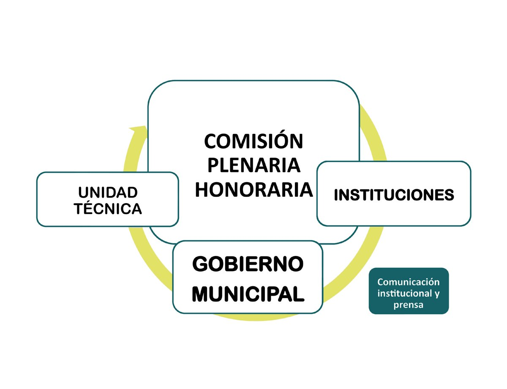

Planificamos juntos la ciudad que queremos habitar
El Consejo de Planificación Urbano Ambiental reúne a instituciones, organizaciones ambientales y al gobierno municipal para pensar el crecimiento armónico y sustentable de Villa Carlos Paz.
Todo sobre la planificación de la ciudad, en un solo lugar
El CPUA
Quiénes somos, qué hacemos y cómo se integra el Consejo.
Conocer másBuscador
Actas, dictámenes y ordenanzas: por palabras clave, dentro del texto y por fechas.
BuscarCódigo de Edificación
Ordenanza Nº 4021 de Desarrollo Urbano Ambiental.
ConsultarÁrea Protegida
Comisión Asesora del Plan de Manejo del AP1 (MAP) · Camiare.
VerComisión Plenaria
Instituciones y organismos que integran el Consejo.
Ver institucionesDocumentos
Carta Orgánica, estudios técnicos, Plan de la Villa y más.
Ver documentosMapas
Radio urbano, zonificación y Área Protegida Norte.
ExplorarAcciones y galería
Foros, jornadas y actividades del Consejo.
VerUn espacio consultivo para decidir cómo crece la ciudad
El CPUA es un órgano de carácter consultivo que depende directamente del Concejo de Representantes. Fue creado por la Carta Orgánica Municipal, reglamentado por la Ordenanza Nº 4951 y comenzó a funcionar en marzo de 2009.
Estudia y debate cada tema para elaborar dictámenes que recogen la opinión de los diversos sectores involucrados, y proporciona las pautas para el Código de Edificación y Desarrollo Urbano Ambiental.
Conocer el Consejo
Últimas actas y dictámenes
Acercate al Consejo
·